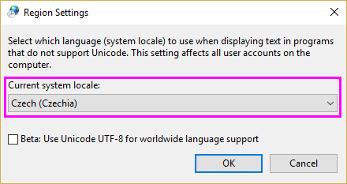
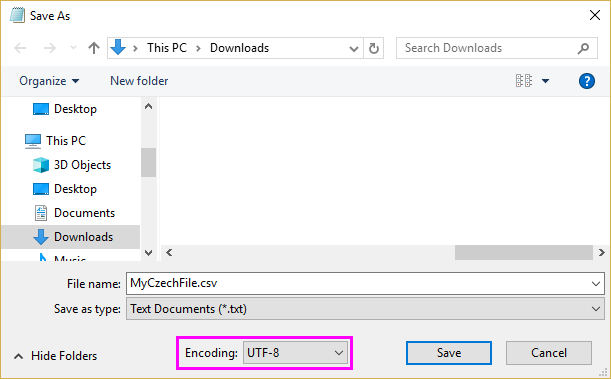

FAQ-1182 Wie importiere ich östliche/zentraleuropäische Zeichen?
Import-Eastern-Central-European-Characters
Letztes Update: 19.06.2023
Um die Datendatei, die die östlichen/zentraleuropäischen Zeichen (ANSI-Kodierung) enthält, zu importieren, nutzen Sie eine der folgenden drei Methoden:
Lösung 1: @cps temporär auf 1250 setzen.
- Wählen Sie im Menü Fenster: Skriptfenster.
- Geben Sie im geöffneten Skriptfenster das folgende Skript ein:
@cps=1250
und drücken Sie auf die Taste Enter, um @cps temporär auf 1250 zu setzen.
- Importieren Sie Ihre Daten.
- Hinweis: Denken Sie daran, @cps nach dem Import wieder zurück auf -1 (Standard) zu setzen.
Lösung 2: Kodeseite des Betriebssystems auf Tschechisch setzen.
- Öffnen Sie die Systemsteuerung von Windows.
- Wählen Sie Region, um den Dialog Region zu öffnen.
- Gehen Sie zur Registerkarte Verwaltung. Klicken Sie im Abschnitt Sprache für Unicode-inkompatible Programme auf die Schaltfläche Gebietsschema ändern.
- Wählen Sie das Gebietsschema Tschechisch (Tschechien).
- 
- Klicken Sie auf OK. Starten Sie Ihren PC wie aufgefordert.
- Versuchen Sie nach dem Neustart, Ihre Daten neu zu starten.
- Hinweis: Diese Änderung hat eine Wirkung auf das gesamte Betriebssystem, so dass Notepad und Mikrosoftwares (Word, Excel, PowerPoint etc.) auch östliche/zentraleuropäische Zeichen korrekt anzeigen können.
Lösung 3: Datei als UTF-8-Kode neu speichern.
- Befolgen Sie die Schritte in Lösung 2 oben, um die Kodeseite des Betriebssystems in Tschechisch (Tschechien) zu ändern.
- Öffnen Sie die Datendatei in Notepad. Sie sollte korrekt angezeigt werden.
- Wählen Sie im Menü Datei: Speichern unter und wählen Sie dann UTF-8 für Kodierung, um sie als UTF-8 zu speichern.
- 
- Jetzt können Sie wieder in die ursprüngliche Einstellung für die Kodeseite festlegen. Versuchen Sie dann, Ihre Daten zu importieren. Sie sollte korrekt importiert werden.
Schlüsselwörter:östliche Zeichen, zentraleuropäische Daten, Tschechisch, Datenkonnektor, Datenimport, Sonderzeichen, Datenformat, Datentyp